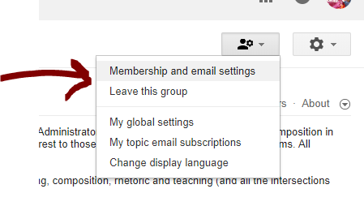

The SoTLDR announcement list provides publication announcements for the Scholarship of Teaching and Learning with Digital Resources website. Typically, you will receive one to two messages a month (and no more than five messages).
The SoTLDR announcement list provides publication announcements for the Scholarship of Teaching and Learning with Digital Resources website. Typically, you will receive one to two messages a month (and no more than five messages).
This is an announcement list (not a discussion list). It focuses only on distributing relevant details on new content on the Scholarship of Teaching and Learning with Digital Resources website.
How Do You Join SoTLDR?
You can join the list by visiting https://groups.google.com/forum/#!forum/sotldr/join. You will receive a confirmation message. Please follow the instructions in that message to finalize your list membership.
How Do You Change Settings on SoTLDR?
Note that you can adjust settings (for instance, setting your membership to digest) by clicking the settings menu at the top right of the page, shown in the image below or view at https://www.screencast.com/t/3Xqt5kEyv:

How Do You View SoTLDR without Joining?
If you prefer not to join, you can review messages on the website, where they are also publicly available: https://groups.google.com/forum/#!forum/sotldr.
Questions? Requests?
For questions about the list or to request that something is forwarded to the list, please contact the list owner, Traci Gardner <tengrrl@vt.edu>. You can also check the Google Groups documentation for technical questions: https://support.google.com/groups/answer/2464926?hl=en
To unsubscribe from SoTLDR and stop receiving emails from it, send an email to SoTLDR+unsubscribe@googlegroups.com.
For more options, visit https://groups.google.com/d/optout.